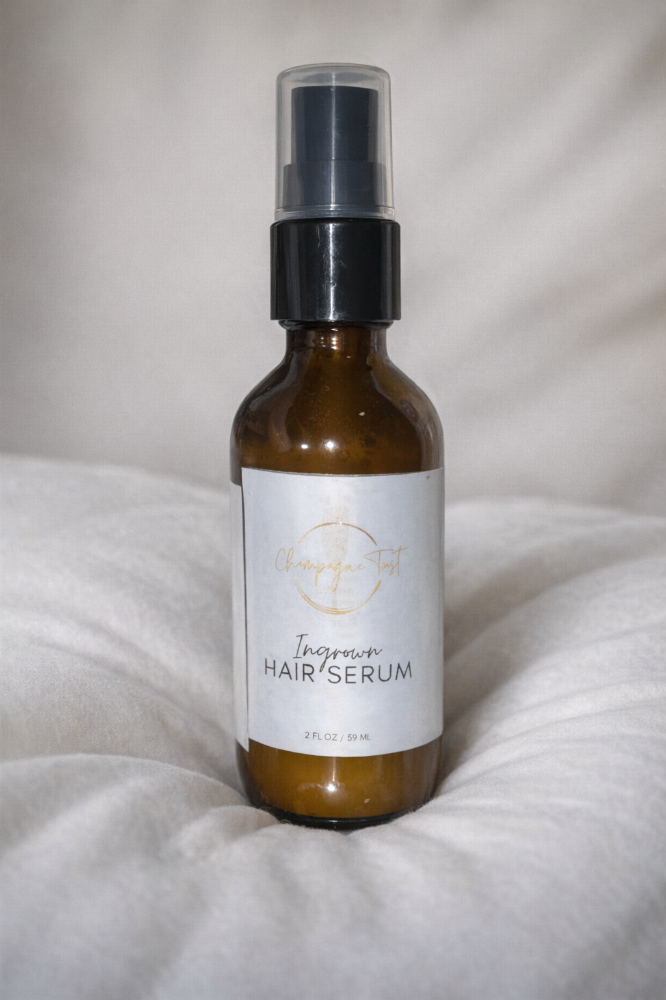

How To Use:
Apply a pea-size amount to hands and rub gently into previously waxed or shaved areas. Use daily after showering.
Ingredients:
Organic Aloe Leaf Juice (Aloe Barbadensis), Organic Alcohol, Organic Coconut Oil (Cocos Nucifera), Emulsifying Wax (Cetyl Alcohol, Stearyl Alcohol, Polysorbate 60), Glycerin, Organic Lavender Flower Water (Lavandula Angustifolia), MSM (Dimethyl Sulfone), DMAE Bitartrate (Dimethylaminoethanol Bitartrate), Organic Calendula Flower Extract (Calendula Officinalis), Organic Bilberry Fruit Extract (Vaccinium Myrtillus), Organic Sugar Cane Extract (Saccharum Officinarum), Organic Sugar Maple Extract (Acer Saccharinum), Organic Orange Peel Extract (Citrus Sinensis), Organic Lemon Peel Extract (Citrus Limon), Organic Cranberry Fruit Extract (Vaccinium Macrocarpon), Organic Jojoba Seed Oil (Simmondsia Chinensis), Hyaluronic Acid, Glycolic Acid, Malic Acid, Tartaric Acid, Citric Acid, Vitamin E (Tocopherol), Sunflower Seed Oil (Helianthus Annuus), Lecithin, Stearic Acid, Xanthan Gum
Disclaimer:
Please test a small area of skin before applying it to a large area. If you are experiencing skin irritation or prolonged stinging, stop using the product and consult your physician. Follow the use instructions on the label. Do not exceed the recommended applications. Please do not use it on infants, children, pregnant or nursing mothers.
Ingrown Hair Serum
Our ingrown hair serum, with hyaluronic, lactic, and malic acids, prevents ingrown hairs and moisturizes the skin.
Say goodbye to bumps and irritation. This serum has a smooth satin finish, leaving your skin hydrated without feeling heavy. It gently exfoliates, soothes, and cleanses the skin to prevent ingrown hairs and reduce post-waxing irritation. Enhanced with salicylic acid, it also minimizes swelling and redness.